Modules in inventorpy¶
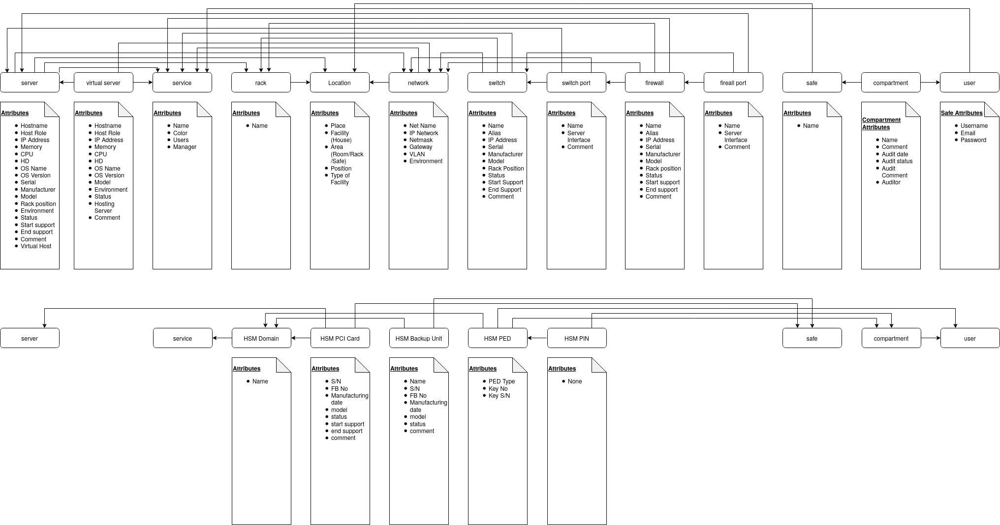
server¶
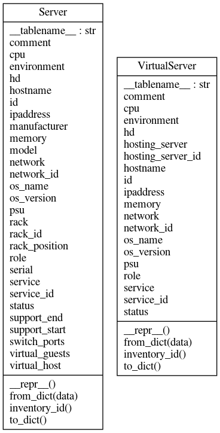
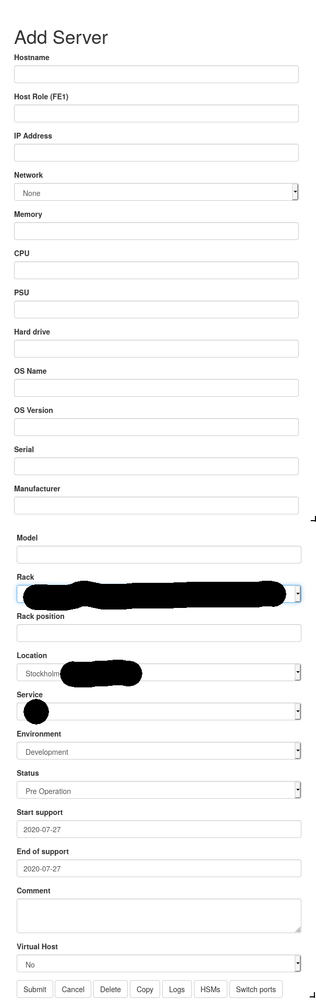
main - service, location, user and audit¶
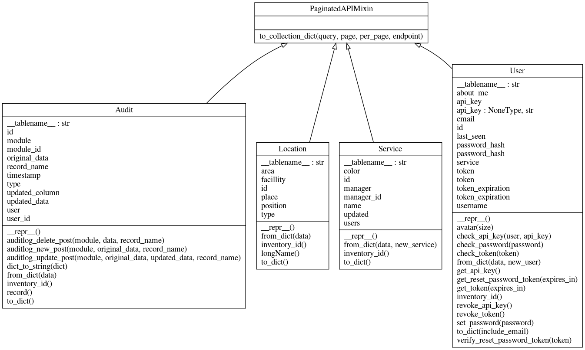
service
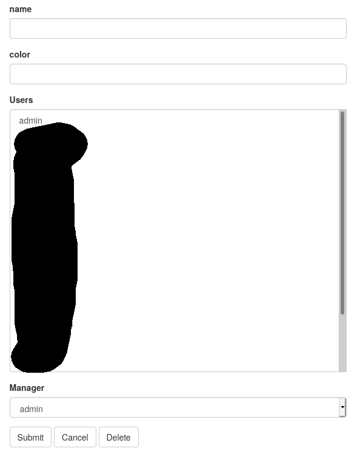
location
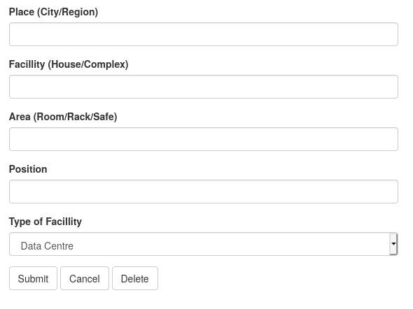
user
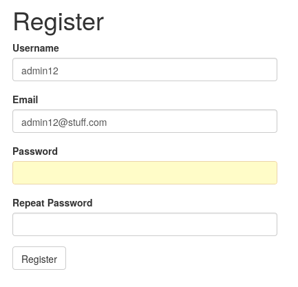
network¶
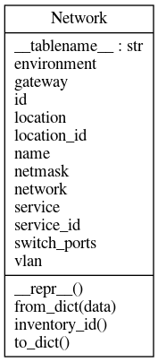
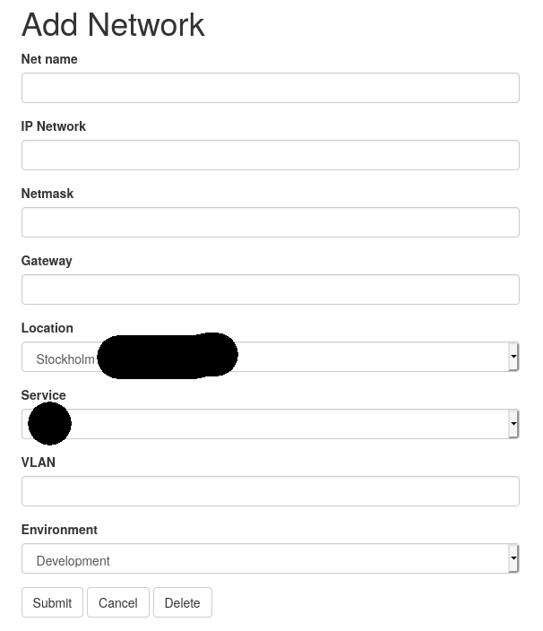
switch / port¶
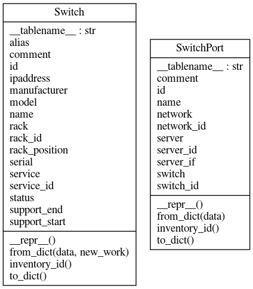
switch
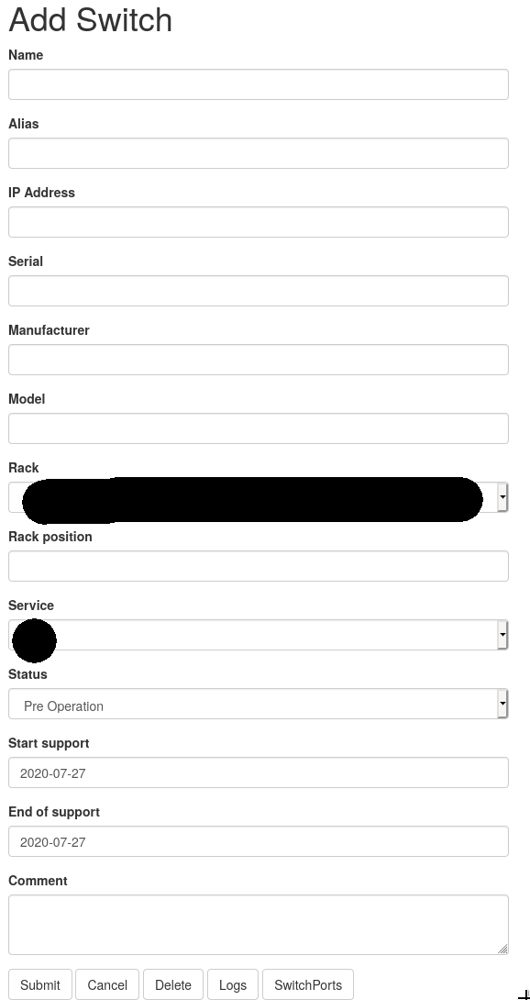
switch port
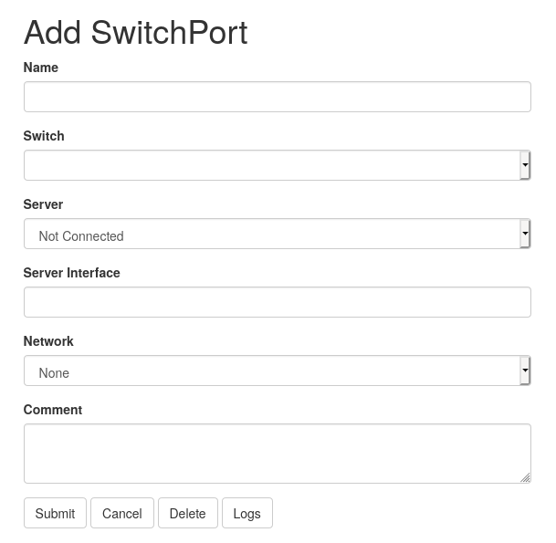
firewall / port¶
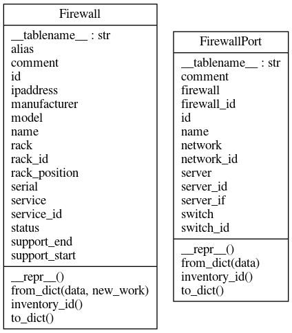
fireall
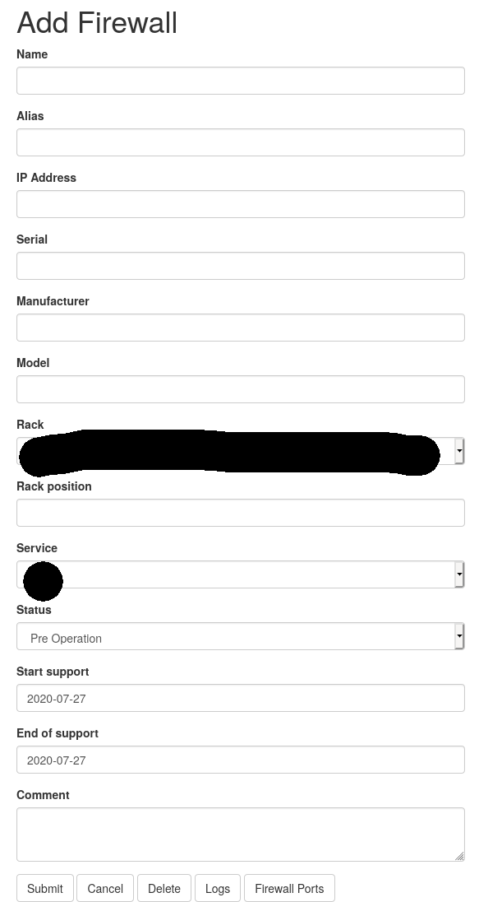
firewall port
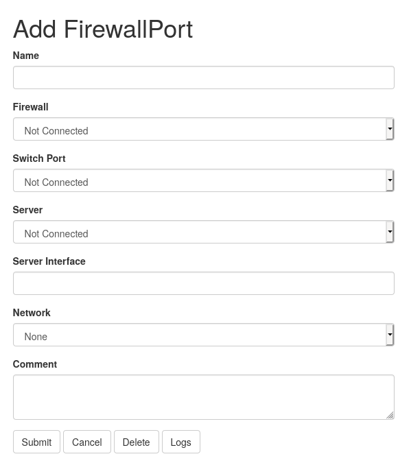
rack¶
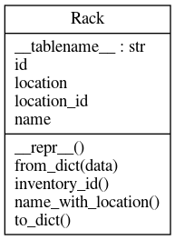
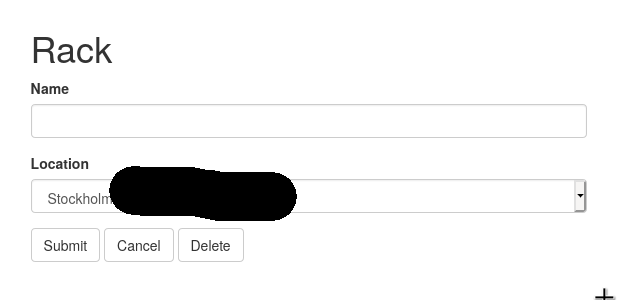
safe / compartment¶
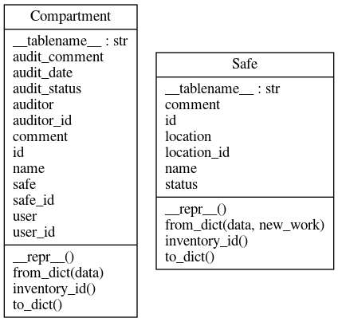
safe
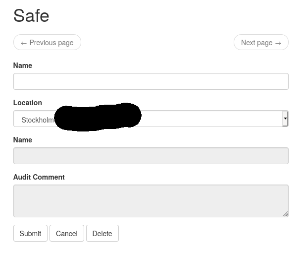
compartment
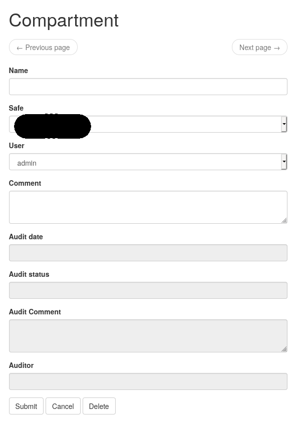
HSM¶
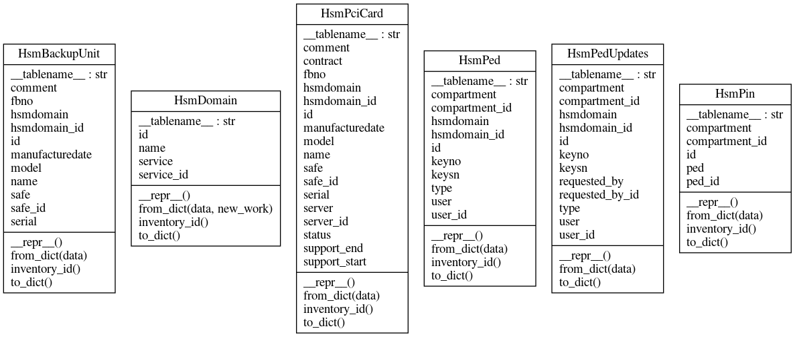
HSM Domain
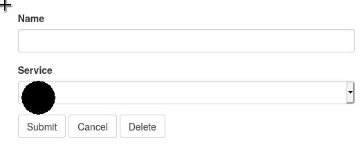
HSM PCI Card
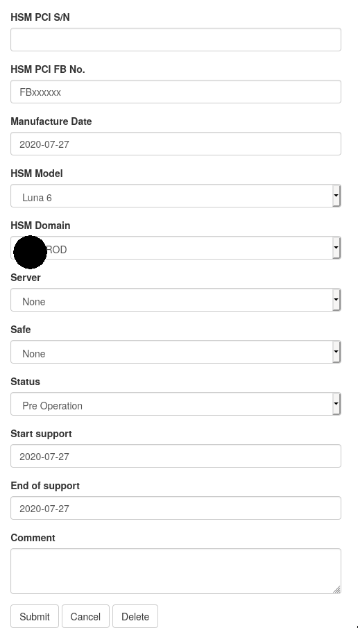
HSM Backup Unit
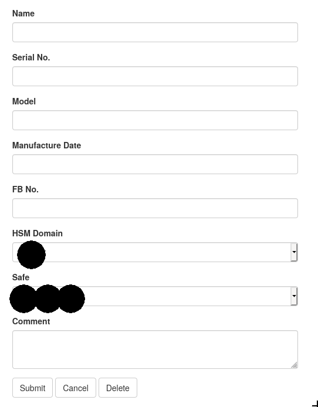
HSM PED
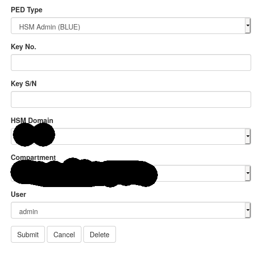
HSM PIN
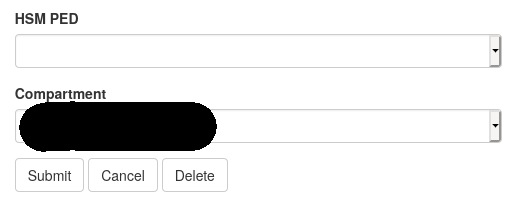